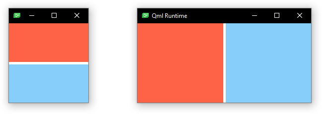

LayoutItemProxy QML Type
The LayoutItemProxy class provides a placeholder for QQuickItems in layouts. More...
| Import Statement: | import QtQuick.Layouts |
| Since: | QtQuick.Layouts 6.6 |
| Inherits: |
Properties
- target : Item
Detailed Description
Some responsive layouts require different layout hierarchies for different screen sizes, but the layout hierarchy is the same as the QML structure and can therefore not be changed at runtime. LayoutItemProxy overcomes this limitation by representing a target item within the layout. The target item itself can be defined anywhere in the QML hierarchy. This allows declaration of multiple layouts with the same content items. The layouts can be shown and hidden to switch between them.
Note: This API is considered tech preview and may change or be removed in future versions of Qt.
The LayoutItemProxy will try to take control of the target item if it is visible. Taking control will position and resize the target item to match the position and size of the LayoutItemProxy. Further, the LayoutItemProxy will set itself as the parent of the target (to ensure event delivery and useful drawing order) and set the visibility to true. Multiple LayoutItemProxies can target the same item, but only one LayoutItemProxy can control an item at a time. Therefore only one of the proxies targeting the same item should be visible at a time. If multiple proxies target the same item but visible is set to false for each proxy, the item will also be invisible.
All Layout attached properties of the target, as well as the QQuickItem::implicitWidth and QQuickItem::implicitHeight of the target are forwarded by the LayoutItemProxy. The LayoutItemProxy will mimic the target as closely as possible in terms of Layout properties and size. Layout attached properties can also be set explicitly on the LayoutItemProxy which will stop the forwarding of the target properties.
Example Usage
This is a minimalistic example, changing between two layouts using proxies to use the same items in both layouts. The items that populate the layouts can be defined at an arbitrary point in the QML structure.
Rectangle { id: rectangle1 color: "tomato" Layout.fillHeight: true Layout.fillWidth: true } Rectangle { id: rectangle2 color: "lightskyblue" Layout.fillHeight: true Layout.fillWidth: true }
Then we can define the Layouts with LayoutItemProxys
GridLayout { id: l1 columns: 1 visible: false anchors.fill: parent LayoutItemProxy { target: rectangle1 } LayoutItemProxy { target: rectangle2 } } GridLayout { id: l2 columns: 2 visible: true anchors.fill: parent LayoutItemProxy { target: rectangle1 } LayoutItemProxy { target: rectangle2 } }
We can switch now between the layouts, depending on a criterion of our choice by toggling the visibility of the layouts on and off.
onWidthChanged: { if (width < 300) { l2.visible = false l1.visible = true } else { l1.visible = false l2.visible = true } }
The two resulting layouts look like this:

The LayoutItemProxy can also be used without layouts, e.g. by anchoring it to different items. A mix of real Items and proxy items is equally possible, as well as nested structures of layouts and items.
Warning: The LayoutItemProxy will set the parent of its target to itself. Keep this in mind when referring to the parent of the target item.
See also Item, GridLayout, RowLayout, and ColumnLayout.